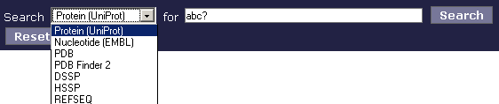
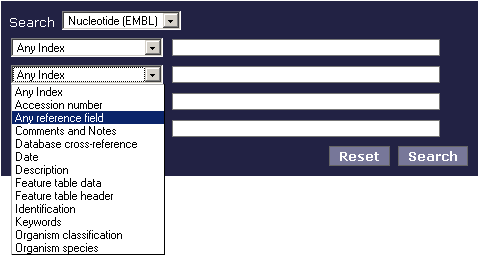
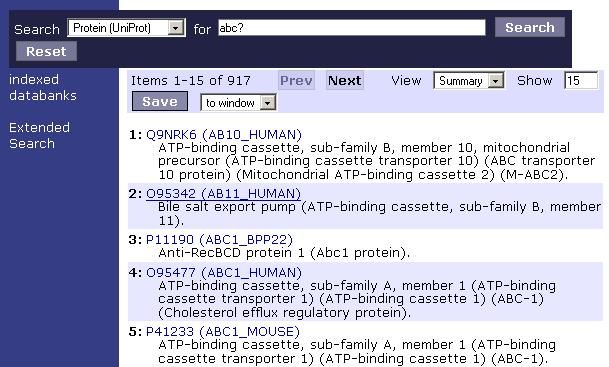
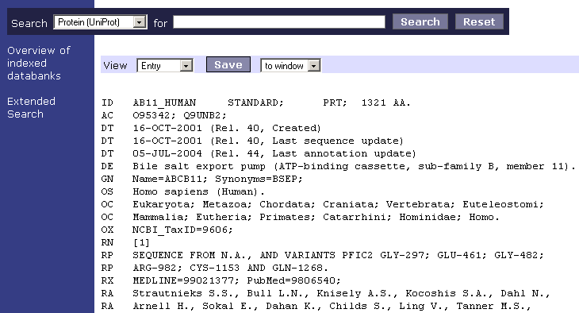

MRS is a search engine rather similar to Google, which enables you to search quickly through databanks that contain biological information.
This guide tells you briefly how to achieve the best results when conducting a search action.
The basic search page of MRS displays one pop-up box and one text box. In the pop-up box you can select the database you want to search; in the text box you can enter one or more search terms. To start a search action, simply choose a database and enter the term you are looking for and press Search.

Screenshot: selecting a database for a searchIf you want to conduct a more refined search, click Extended Search in the left-hand margin. This brings you to a page with multiple text boxes, where you can specify exactly in which index of the selected database you want to search for a particular term. Obviously, the more indexes and terms you enter, the more specific the search results will be.
Example
You want to search for AA and BB in the indexes YY and ZZ of the UniProt databank:
If the result of an extended search action still contains too many hits to your taste, you can refine your search even further by conducting a boolean search.
The terms to use for boolean searches are the following:
| AND, OR, NOT | Use these parameters (or their abbreviated equivalents &, | and ! respectively) to include or exclude terms in a search action. Note: if you enter two or more terms after each other, MRS will automatically search for entries in which all entered terms occur together. |
| () | Use these brackets to assign hierarchy within the search terms. |
| ? | Use the question mark to replace a single character in a search term. For example, if you're not sure whether a term is spelled with an 'i' or 'y' use the ? in the place of these letters. Similarly, if you're looking for a gen starting with, for example, 'acb' followed by one other character, use the ? to replace the last character. You will then find all genes starting with 'acb' followed by one other character. |
| * | Use the asterisk as a so-called wild card. This means that you can use it in the place of more than one character. If you enter the first part of a search term followed by the asterisk, for example, 'acb*' the search results will yield all occurrences of terms beginning with 'acb' followed by one or more characters. Obviously, using the asterisk presents a longer hit list than using the question mark. |
Examples
Hier komen nog voorbeelden met boolean search opdrachten.
The results of your search appear in a numbered list on your screen as shown below.
By default, the search results are displayed in 'Summary' mode. This means that for each hit found, you see only the information contained in the Index and Definition fields. To view the complete entry information, click on the link of an entry.
Other ways to view the results are 'FastA' and 'Entry'. If you select 'FastA', you'll see the results as FastA; if you select 'Entry', you will see the entire entry information for all the hits found. You may only want to choose the latter option if you're certain that your search will yield only a very limited number of hits, or else it will take you a lot of scrolling to view all hits found.
When your search action has led to satisfactory results, you can save them to your disk. [OF WINDOW - MRS DOET HET NIET]